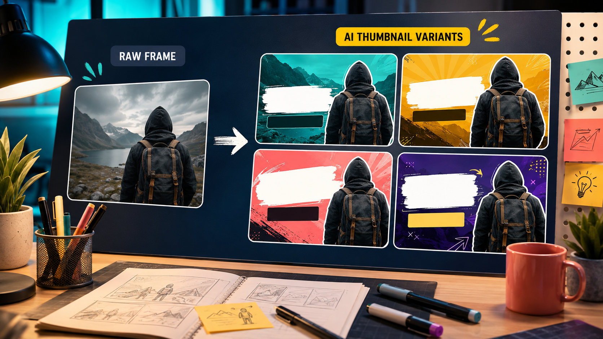

Промтзилла
Превью должно быстро объяснять тему ролика и не обещать того, чего в видео нет. Иначе клики будут, а доверие исчезнет.

Пошаговая инструкция
- 1Выбери ключевой кадр или опиши сюжет ролика.
- 2Укажи площадку и формат: 16:9 для YouTube, 9:16 для вертикальных видео.
- 3Попроси 4-6 вариантов композиции.
- 4Оставь место под 2-4 слова крупного текста.
- 5Проверь превью в маленьком размере: оно должно читаться на телефоне.
Какой результат просить
Хорошее превью имеет один главный объект, сильный контраст и чистую область под короткую надпись. Для старта можно использовать GPT Image в Study24: добавь исходник, цель и ограничения, а затем попроси вариант для публикации.
Промт
RU
Создай превью для видео. Тема ролика: [тема] Главная эмоция или интрига: [что должно зацепить] Формат: 16:9 Текст на превью: [2-4 слова или оставить место без текста] Требования: — сделай 4 варианта композиции; — один главный визуальный акцент; — крупные формы и хороший контраст; — оставь чистую область под текст; — превью должно быть честным и соответствовать содержанию видео; — не используй чужие логотипы и кликбейт, который искажает смысл.
EN
Create a video thumbnail. Video topic: [topic] Main emotion or intrigue: [what should catch attention] Format: 16:9 Thumbnail text: [2-4 words or leave space without text] Requirements: — create 4 composition options; — one main visual focus; — large shapes and strong contrast; — keep a clean area for text; — the thumbnail must honestly match the video content; — do not use third-party logos or misleading clickbait.
Важно
Не перегружай превью мелким текстом: на мобильном оно превращается в шум.
Теги